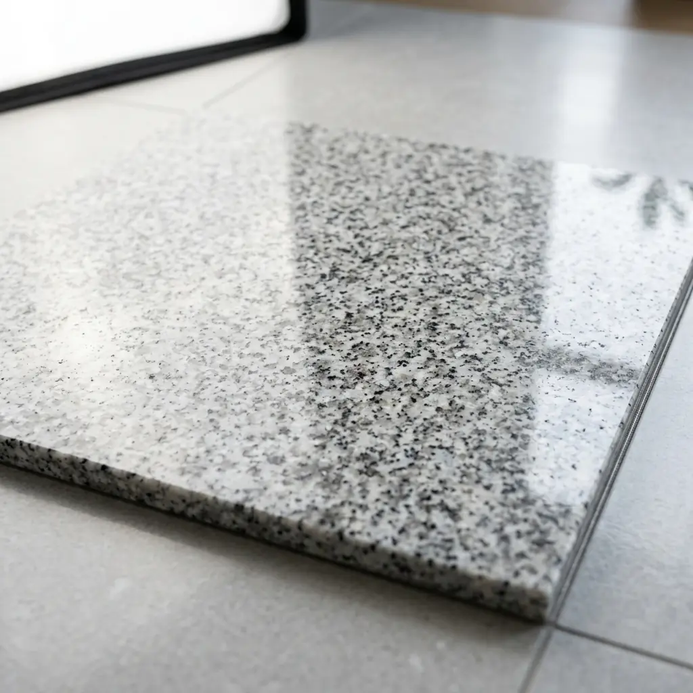
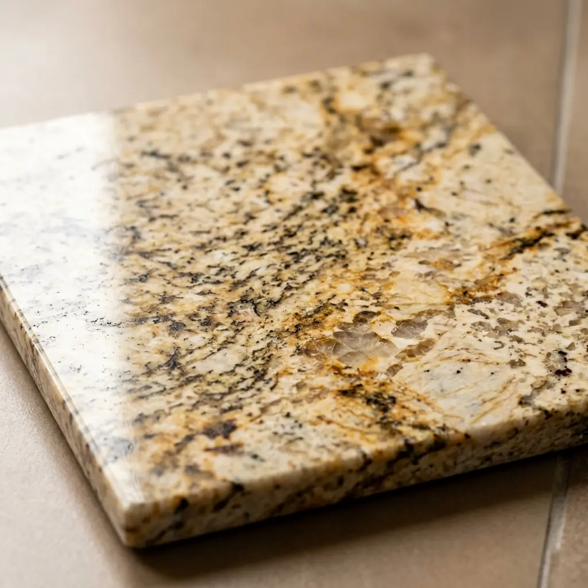
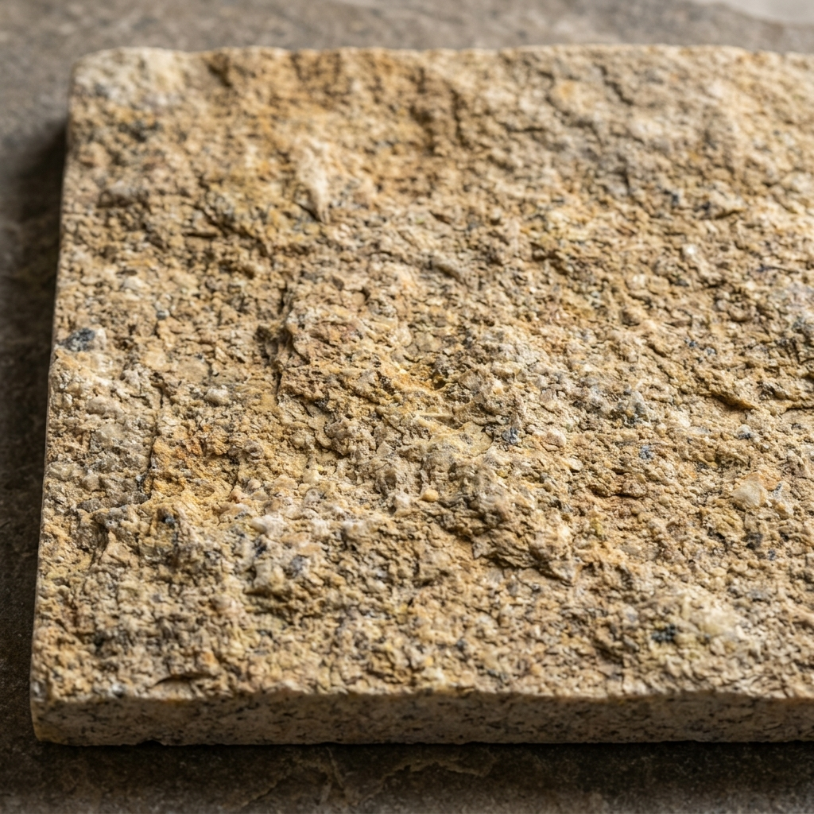

Vybíráme pro Vás pouze ty nejkvalitnější přírodní kameny s důrazem na jedinečnou kresbu, barevnou stálost a extrémní odolnost.
Přírodní kámen, a obzvláště žula, je materiál s nezaměnitelným charakterem. Každý blok vytěžený z lomu má svou originální texturu a barevné tóny, což zaručuje, že každý finální výrobek je naprostým unikátem.
Níže si můžete prohlédnout základní ukázky textur a povrchových úprav, které standardně nabízíme. Rádi Vám vzorky předvedeme osobně a pomůžeme vybrat optimální odstín ladící s Vaším interiérem či exteriérem.
Leštěný povrch pro vysoký lesk a snadnou údržbu, nebo pálený (hrubý) povrch s protiskluzovým efektem.
Od elegantních šedobílých tónů, přes hřejivé žluté a pískové odstíny až po luxusní tmavé struktury.
Kliknutím na obrázek si můžete zobrazit detailní náhled struktury kamene.

Leštěný povrch
Jemná zrnitost a elegantní světlá barva, ideální pro moderní kuchyňské desky a interiérové obklady.

Leštěný povrch
Výrazná a hluboká kresba dodávající prostoru maximální exkluzivitu a luxusní dojem.

Leštěný povrch
Teplé barevné tóny, které zútulní každý domov. Skvělá volba pro krby, parapety a vnitřní dlažby.

Pálený (hrubý) povrch
Protiskluzová mrazuvzdorná úprava vhodná pro exteriérová schodiště, terasy a přístupové cesty.
Disponujeme přístupem k mnoha dalším druhům tuzemských i dovozových materiálů. Neváhejte nás kontaktovat s Vaší konkrétní představou – společně najdeme ideální kámen přesně pro Váš projekt.
Svěřte svůj projekt do rukou profesionálů. Kontaktujte nás a my pro Vás rádi připravíme nezávaznou kalkulaci na míru.